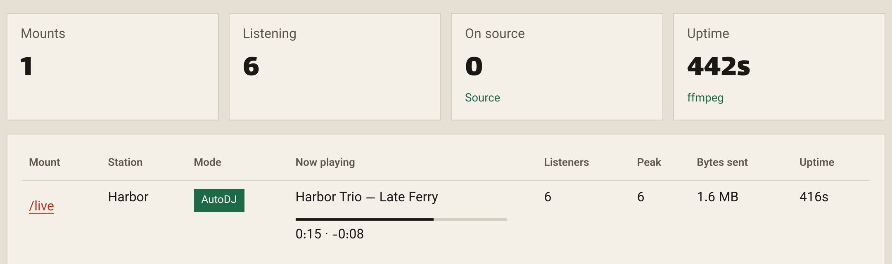
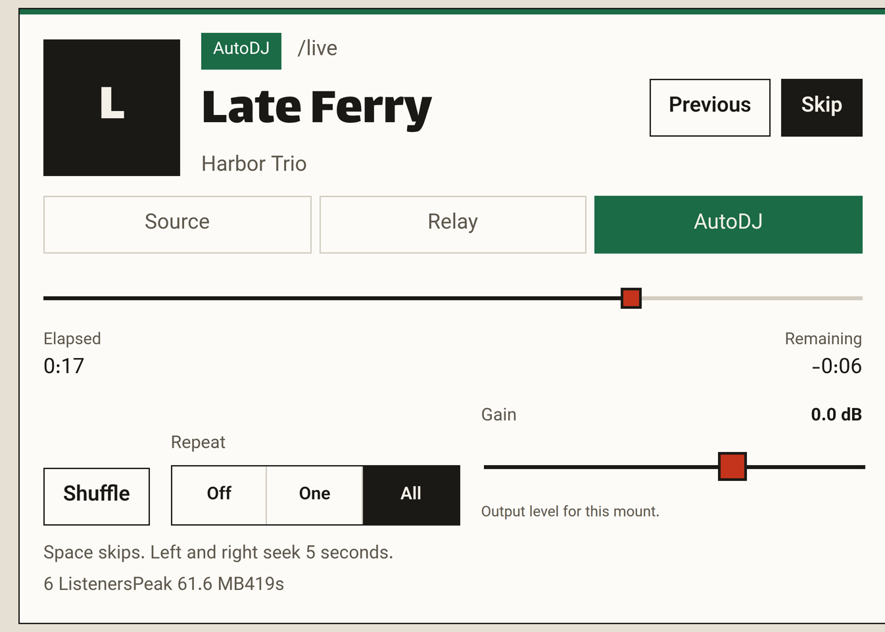
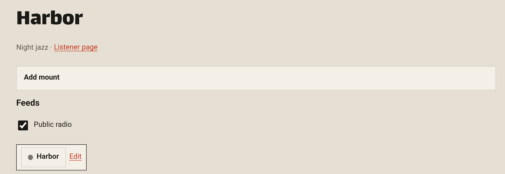
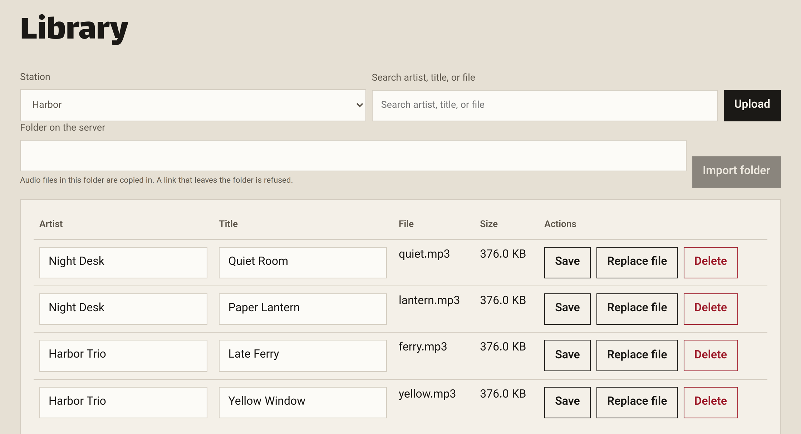
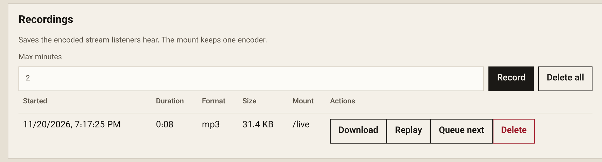
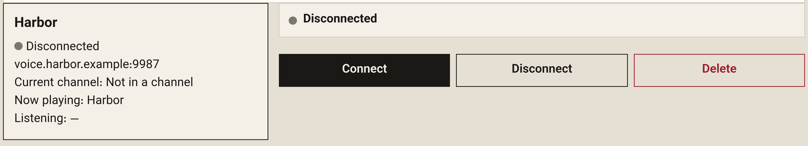
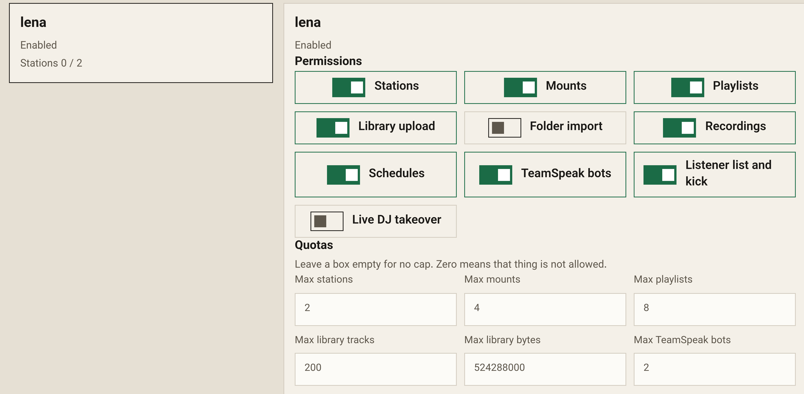
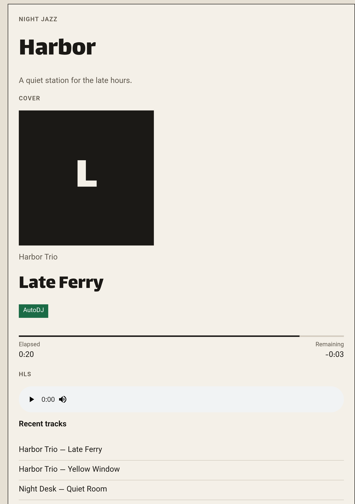

Linux
./navad --config navad.example.jsonNavaCast
One process runs the station. AutoDJ plays the library, a live source can take the same mount, and the encoded audio goes to HTTP listeners and to HLS. Harbor, below, is on /live in AutoDJ, and people are already listening.
The desk is English until you switch it. Persian uses the name نوا کست. The stream itself does not change language.


Playback
The deck is the mount. Skip, seek, shuffle, and repeat sit on the track that is already going out. Source, relay, and AutoDJ are three ways that one mount can be fed. Only one of them owns it.
A DJ connects with the Icecast source protocol. NavaCast decodes that source and re-encodes it on the mount, so the people already listening are not handed a new stream. AutoDJ holds. Seek waits until AutoDJ owns the mount again. When the DJ disconnects, AutoDJ continues on those same connections.
Station
Public radio is the Icecast and HLS mount. Turn it off and the pump still runs, so a bot can keep playing after the public stream is quiet. The chips under Feeds are the TeamSpeak bots this station is sending to.
One bot follows one station. Switching the station crossfades and does not reconnect the bot. Deleting the station detaches the bot. It does not delete the bot.


Library
Upload a file, or import a folder on the server. Titles and artists stay editable. A playlist such as Late set is what AutoDJ walks, and a weekly window can put that list on the mount without someone at the desk.
Accepted files are MP3, WAV, FLAC, Ogg, M4A, and AAC. What the native encoder can play on its own, and what needs ffmpeg, is in the README.
Recording
Recording writes the encoded stream, whether the mount is on AutoDJ, a live source, or a relay. One encoder, one file. The file stays under the data directory. Download it, replay it onto the mount, or queue it. The stream port does not serve it.
A cap on minutes ends the file. Stop ends it sooner. The row below is a short take of /live while Harbor was on the air.


TeamSpeak
A bot is a TeamSpeak 3 voice client, in the spirit of SinusBot. It is not a ServerQuery script, and it is not TeamSpeak 5. Opus goes out on the TeamSpeak voice port. Nothing new listens on the stream port.
Bots have their own tab. Add a host, the voice port (usually 9987), and a nickname, then connect. The live channel tree appears only while that bot is connected. Click a channel to join it. A lock means the channel has a password, and that is the only time the password field is shown. Passwords stay blank after you save. The connection log does not record them.
Each bot is its own thread. A stuck socket, a bad packet, or a failed reconnect in one bot does not stop Icecast, HLS, AutoDJ, the desk, or the other bots. If the bot falls behind, frames are dropped. The radio does not wait on TeamSpeak.
Accounts
The first admin is the owner and has no caps. There is no payment step. Selling an account means creating the user, setting the switches and the numbers, and handing over the login. Revoking is disable or delete.
Each permission is its own switch: stations, mounts, playlists, library upload, folder import, recordings, schedules, TeamSpeak bots, the listener list and kick, and live DJ takeover. Off returns 403. The check is in the API.
Each cap is a number: stations, mounts, playlists, library tracks, library bytes, TeamSpeak bots, recordings, and recording bytes. Leave it blank for no cap. Zero means that thing is not allowed. The cap is checked when the row is created, and deleting the row frees the slot. A user sees only their own rows, and cannot change their own permissions or quotas. Lena, opposite, can run two stations and four mounts. Folder import and live takeover are off.


Listener
The listener page is the station's public face: the name, the genre, what is playing, and an HLS player. It has no admin controls. Recent tracks are the mount's own history.
Open it from the station, or go to #/listen/ plus the station slug. The stream URL itself is still the mount, plain HTTP, for any player that speaks Icecast or HLS.
Run
A release is a Linux tar or navad.exe for Windows. The example file has no passwords. The first start creates the owner and prints the username, password, and API token once.
./navad --config navad.example.jsonnavad.exe --config navad.example.jsonThese are the defaults in the example. Bind address and public URL are separate. TLS ends at your proxy. NavaCast speaks plain HTTP. Ctrl+C stops the process. On Windows the same handler runs for the console control event.